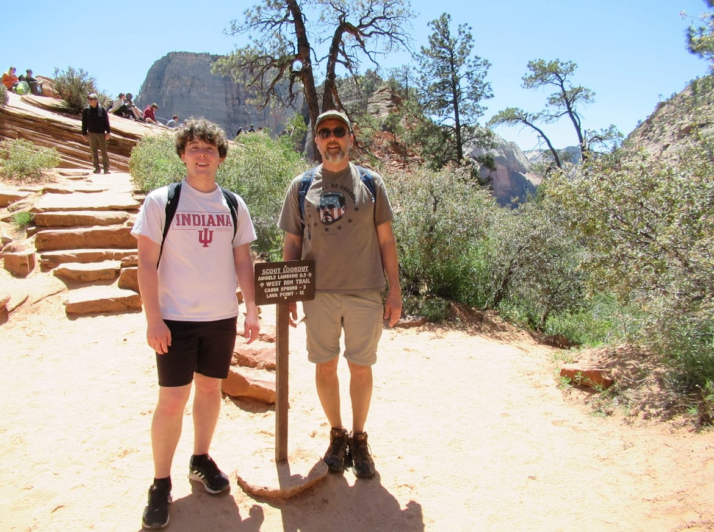
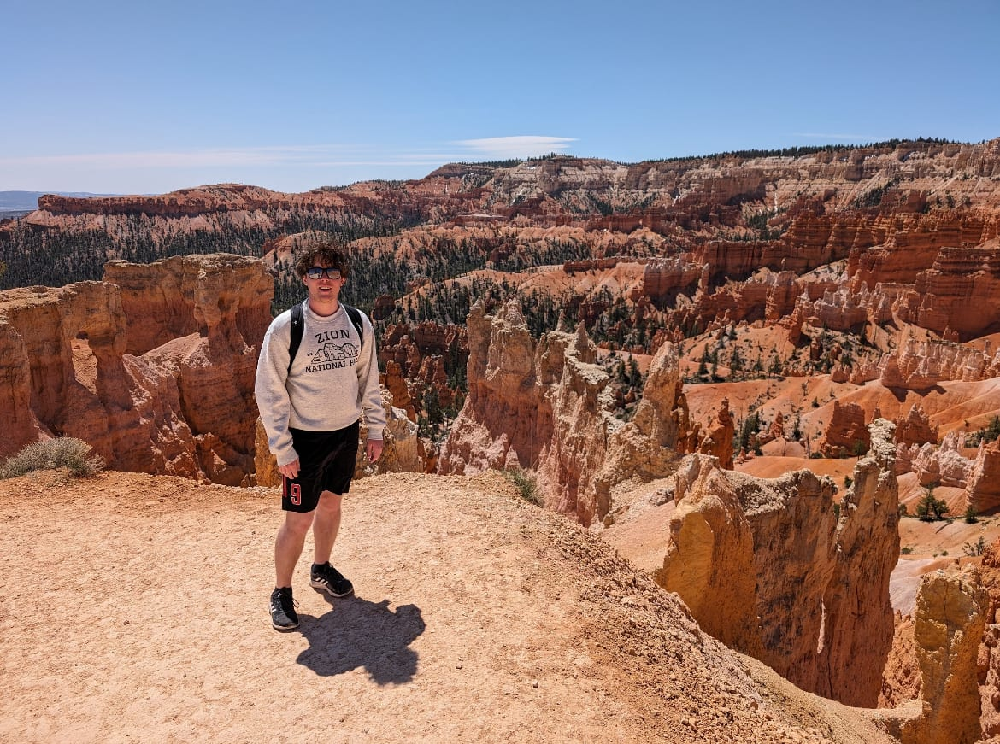
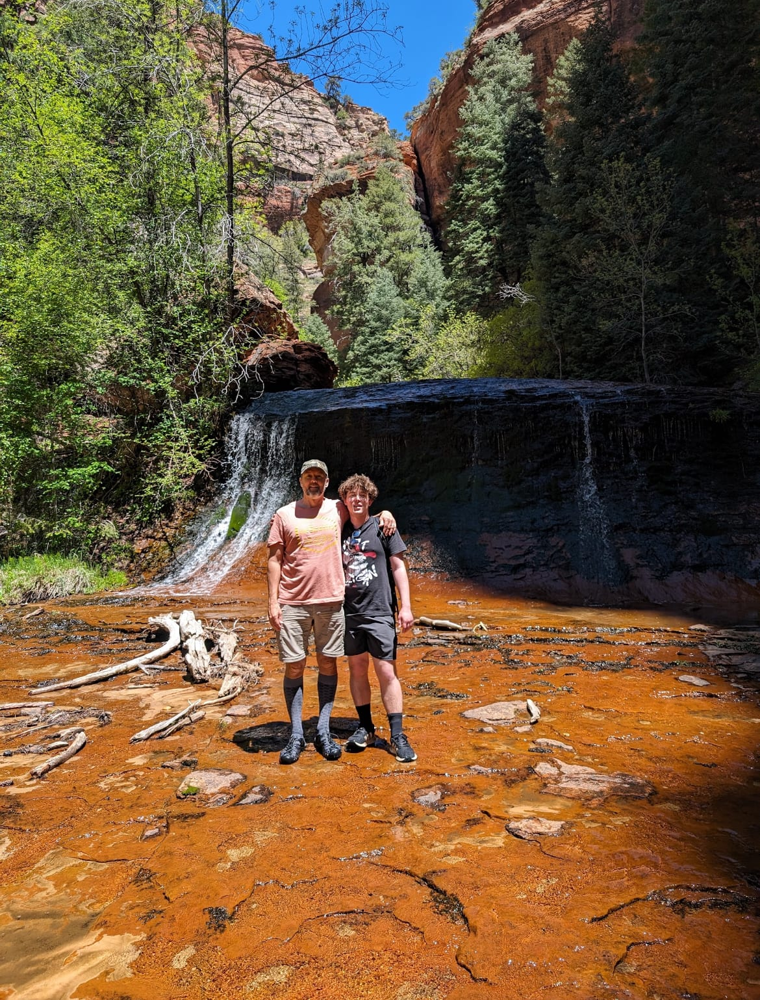
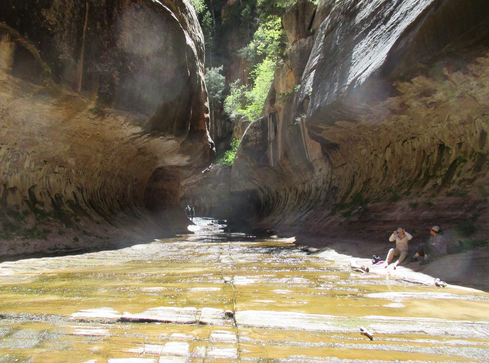
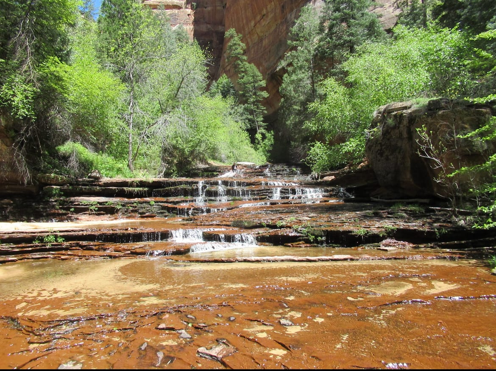

ZION 2024
DAY 1 (TRAVEL)
- 1:45 flight to Vegas was rerouted after the Vegas airport was too windy to land us and we used too much fuel waiting around for them to land us
- rerouted to Ontario CA and waited for like 30 min while we refueled and took off again for Vegas
- Ate chipotle, got groceries and drove from Vegas to Springdale, UT 2.5 hrs
DAY 2 (ZION) - 13.1 miles
- Woke up 6:30ish to get breakfast at Oscar's Cafe
- really good Mexican breakfast food
- Took a shuttle at 8:00 to The Grotto and walked (1.5 miles) to Hidden Canyon trailhead
- tried to do Hidden Canyon but it was closed
- walked up the road (0.2 miles) to the closest bus stop but they never picked us up at Big Bend
- Walked back down the road (1.7 miles) to the grotto stop and did Emerald Pools (3 miles) hike
- the pools were kind of underwhelming
- Hiked to Scout's Lookout and Angel's Landing (5.2 miles)

- We ate dinner at Bit and Spur
- got sweet potato tacos with a black bean spread on the tortilla, pretty good
- they had a farmer's market out back
DAY 3 (BRYCE CANYON) - 7.2 miles
- Slept in a bit to catch up on lost sleep from the first night
- Ate leftover Chipotle for breakfast
- Drove 2 hrs to Bryce
- Ate lunch at Pines near Bryce
- good breakfast food
- Drove to Sunset Point to start the Figure 8 (6.2 miles)

- Drove 1.5 hrs back to Canyon Overlook (1 mile)
- easy and crowded
- ok views but ruined by a big road in the middle of the valley
- Drove 30 mins back to Springdale and ate dinner at Meme's Cafe
- Good philly sandwich and fries
- Dipped my feet in ice bath back at the hotel
- Walked to Bumbleberry Cafe for ice cream
DAY 4 (ZION) - 7 miles
- Woke up and dad went to get permits for The Subway and was successful
- Ate our free breakfast with vouchers at Porter's and went to Sol Market for packaged wraps for the hike
- Drove 30 min to Left Fork Trailhead and started the steep 400 ft descent (36 min) on The Subway (7 miles)
- 2.5 more hrs to get there (3.5 miles)
- lots of crossing back and forth across the river slows you down
- trail goes along the river but loosely marked and we just walked through the water a lot of times rather than trying to stay dry
- 600 ft ascent was very gradual and didn't get steep at all for a while until the very end

- we entered "The Subway" and spent 21 min there

- we left and turned around cuz dad forgot his cane and left again after 24 min
- the top down hikers had it and were resting ahead of us
- we flew through the rest of the way back (1.5 hrs) and started our 400 ft ascent (40 min)

- finished the "10 hour hike" in 6 hrs
- Went to Balcony One for dinner
- nice restaurant, great service
- good pork shank wings
DAY 5 (TRAVEL)
- Woke up and packed and got breakfast at Porter's again
- Got on the road and drove to the airport to fly home at 1:55
- flight was smooth and on time